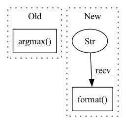

Pattern ID :20121

Before Change
y = self.model.predict(x, verbose=0)
loss = y_pred[0]
accuracy = y_pred[1]
correct = tf.equal(tf.argmax(y, 1), tf.cast(target, tf.int64))
// metrics["test_correct"] += tf.reduce_mean(tf.cast(correct, tf.float32))
metrics["test_loss"] += loss
After Change
x = x.numpy()
target = target.numpy()
test_results = self.model.test_on_batch(x=x, y=target, reset_metrics=False)
logging.info("test_results = {}".format(test_results))
mlops.log({"Test/Loss": test_results[1], "round": args.round_idx})
mlops.log({"Test/Acc": test_results[0], "round": args.round_idx})
In pattern: SUPERPATTERN
Frequency: 4
Non-data size: 2
Instances
Fragment ID: 65813230
Project Name: fedml-ai/fedml
Commit Name: 2f09d098b1ff604f1c408a26250fccf4364fdf1f
Time: 2022-08-14
Author: chaoyanghe.com@gmail.com
File Name: python/examples/cross_silo/tf-mqtt_s3_fedavg_mnist_lr_example/tf_model_aggregator.py
M Class Name: TfServerAggregator
N Class Name: TfServerAggregator
M Method Name: test(4)
N Method Name: test(4)
M Parent Class: ServerAggregator
N Parent Class: ServerAggregator
M File Name: python/examples/cross_silo/tf-mqtt_s3_fedavg_mnist_lr_example/tf_model_aggregator.py
N File Name: python/examples/cross_silo/tf-mqtt_s3_fedavg_mnist_lr_example/tf_model_aggregator.py
M Start Line: 29
M End Line: 44
N Start Line: 32
N End Line: 39
'>
Before Change
else:
binary_pairs = list(zip(feature_pos[:-1], feature_pos[1:]))[0::2]
for pair in binary_pairs:
argmax = torch.argmax(x_enc[:, pair[0] : pair[1] + 1])
argmin = 1 - argmax
x_enc[:, pair[0] + argmax] = 1
x_enc[:, pair[0] + argmin] = 0
After Change
if (x_enc[:, pair[0]] == x_enc[:, pair[1]]).any():
raise ValueError(
"Reconstructing encoded features lead to an error. Feature {} and {} have the same value".format(
pair[0], pair[1]
)
)
return x_enc
'>
Fragment ID: 65813231
Project Name: indyfree/carla
Commit Name: fc171398c57a0427d6d09ac97b7d7d5458ce74a9
Time: 2021-06-30
Author: sbielawski@web.de
File Name: carla/recourse_methods/processing/counterfactuals.py
M Class Name: AnonimousClass
N Class Name: AnonimousClass
M Method Name: reconstruct_encoding_constraints(3)
N Method Name: reconstruct_encoding_constraints(3)
M Parent Class:
N Parent Class:
M File Name: carla/recourse_methods/processing/counterfactuals.py
N File Name: carla/recourse_methods/processing/counterfactuals.py
M Start Line: 82
M End Line: 94
N Start Line: 82
N End Line: 100
'>
Before Change
y = self.model.predict(x, verbose=0)
loss = y_pred[0]
accuracy = y_pred[1]
correct = tf.equal(tf.argmax(y, 1), tf.cast(target, tf.int64))
// metrics["test_correct"] += tf.reduce_mean(tf.cast(correct, tf.float32))
metrics["test_loss"] += loss
After Change
x = x.numpy()
target = target.numpy()
test_results = self.model.test_on_batch(x=x, y=target, reset_metrics=False)
logging.info("test_results = {}".format(test_results))
mlops.log({"Test/Loss": test_results[1], "round": args.round_idx})
mlops.log({"Test/Acc": test_results[0], "round": args.round_idx})
'>
Fragment ID: 65813232
Project Name: fedml-ai/fedml
Commit Name: f0596a0b7173add589515ac589abbadd02f879c9
Time: 2022-08-14
Author: chaoyanghe.com@gmail.com
File Name: python/examples/cross_silo/tf-mqtt_s3_fedavg_mnist_lr_example/tf_model_aggregator.py
M Class Name: TfServerAggregator
N Class Name: TfServerAggregator
M Method Name: test(4)
N Method Name: test(4)
M Parent Class: ServerAggregator
N Parent Class: ServerAggregator
M File Name: python/examples/cross_silo/tf-mqtt_s3_fedavg_mnist_lr_example/tf_model_aggregator.py
N File Name: python/examples/cross_silo/tf-mqtt_s3_fedavg_mnist_lr_example/tf_model_aggregator.py
M Start Line: 29
M End Line: 44
N Start Line: 32
N End Line: 39